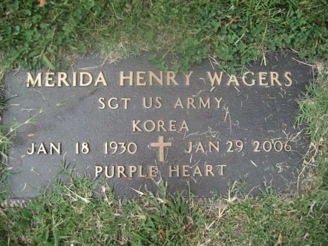

Brewster line · Aileene's first husband · Clay County and London, Kentucky
Also known as: Merdia Wagers (family spelling, used in his sister's 2004 obituary and on Geni) (FAMILY ACCOUNT)
Profile status: (DOCUMENTED) his name, birth, parents, military service, death and burial rest on his VA marker, Social Security and census records and his obituary; his marriage to Aileene is (SUPPORTED) by records naming them as parents
Wagers family reunion, Berea KY, 2 Sep 2000; Find a Grave, added by Beverly Dunn (shared by Paul Wagers)
Quick Facts
Born
18 January 1930, Perry County, Kentucky (DOCUMENTED); at Hazard (SUPPORTED) The date is on his veteran's marker, his Social Security records and the Kentucky birth index, which also give Perry County. Hazard, the county seat, comes from his Find a Grave memorial only.
Military
Sergeant, U.S. Army, Korean War; awarded the Purple Heart (DOCUMENTED) From his bronze VA grave marker.
Residence
Clay County, Kentucky, 1930 and 1940 (DOCUMENTED); Cincinnati, Ohio, 1955 (SUPPORTED); London, Laurel County, Kentucky, 1990s–2006 (DOCUMENTED)
Died
29 January 2006 (DOCUMENTED), London, Laurel County, Kentucky (SUPPORTED) The date is on his veteran's marker and in the Social Security Death Index and his obituary. London is supported by his last residence and his London funeral home and burial; no death certificate has been found. Find a Grave's headline and the FamilySearch tree give 2004, which is wrong: his sister Aline's April 2004 obituary lists him as living.
Burial
A.R. Dyche Memorial Park, London, Laurel County, Kentucky, under a bronze veteran's marker (DOCUMENTED)
Immediate Family
Parents
Shirley A. Wagers (about 1900–1973) (DOCUMENTED) Amanda “Mandy” (Baker) Wagers (about 1901–1984) (DOCUMENTED) Parent-child relationships named in his Social Security application (NUMIDENT), the 1930 and 1940 census indexes, and his obituary. Dates are less certain: the census ages conflict with reported memorial dates; see their profiles.
Spouses
Aileene W. Brewster, married by about 1955; they had parted by 1961 (SUPPORTED) No marriage record for the couple has been found. The marriage rests on their daughter Yvonne's Social Security record and two of their children's Ohio marriage records, which name "Merida Wagers" and "Aileene Brewster" as the parents, and on both his and Aileene's obituaries, which name the same children. Yvonne was born in Cincinnati in December 1955, so they were together by early 1955; by 1961 he had married again.
Children
With Aileene W. Brewster:
Yvonne Diane (Wagers) Wuennemann (7 Dec 1955, Cincinnati, Ohio – 17 Aug 1985, Hamilton, Ohio; buried Gate of Heaven Cemetery, Montgomery, Ohio) (DOCUMENTED)
Yvonne is named as their daughter in her Social Security record, her 1980 Ohio marriage record and both parents' obituaries. Paul is named as their son in his 1971 Ohio marriage record and both obituaries. Billy (William) is in both obituaries, but no record naming both parents has been found. Bruce, Merdy and Jeffrey are named as his sons in his 2006 obituary but not in Aileene's 2015 obituary, so they were probably children of a later marriage; their mother is not proved. Living family members are shown by name only. Family trees wrongly make Helen Henson (born 1944) the mother of Yvonne; the records name Aileene.
Siblings
Ida (Wagers) Carnahan (deceased)
Pearlie (Wagers) Carmack (deceased)
Dudley Wagers (deceased)
Linea (Wagers) Hammons
David Wagers
Aline (Wagers) Helton (d. 24 Apr 2004)
Price Wagers (deceased)
Cathalene (Wagers) Norton
Freddie Wagers
All named in his 2006 obituary (DOCUMENTED); most also appear with him in the 1930 and 1940 censuses. Those not marked deceased are shown by name only.
7 Dec 1955 · age 25 Daughter Yvonne Diane born in Cincinnati, Ohio (DOCUMENTED)
1961 · age 31 Had parted from Aileene and married Helen Louise Henson (UNPROVED)
19 Nov 1979 · age 49 A Merida Wagers married in Volusia County, Florida (bride not indexed) (SUPPORTED)
17 Aug 1985 · age 55 His daughter Yvonne died in Hamilton, Ohio (DOCUMENTED)
9 May 1987 · age 57 Married Pearl Hicks, Laurel County, Kentucky (index) (SUPPORTED)
1990s–2006 Living in London, Laurel County, Kentucky (DOCUMENTED)
2 Sep 2000 · age 70 Photographed at the Wagers family reunion in Berea, Kentucky (DOCUMENTED)
29 Jan 2006 · age 76 Died, London, Laurel County, Kentucky (date (DOCUMENTED), place (SUPPORTED))
2006 Buried in A.R. Dyche Memorial Park, London, under a bronze veteran's marker (DOCUMENTED)
Life Story
Merida Henry Wagers was born on January 18, 1930, in Perry County, Kentucky, one of ten children of Shirley and Amanda "Mandy" (Baker) Wagers, and he grew up in Clay County. (DOCUMENTED) His family sometimes spelled his name "Merdia." (FAMILY ACCOUNT) As a young man he served as a sergeant in the U.S. Army in the Korean War and was awarded the Purple Heart for wounds received there. (DOCUMENTED) By 1955 he had married Aileene W. Brewster, and their daughter Yvonne was born in Cincinnati that December; sons Paul and Billy followed. (SUPPORTED)
The marriage did not last, and by 1961 he had married again. (SUPPORTED) He later made his home in London, Kentucky, and was still turning up at Wagers family reunions in his seventies, white-haired and holding a puppy on a park bench in Berea in 2000. (DOCUMENTED) He died on January 29, 2006, at 76, survived by five sons and four living brothers and sisters, and he lies in A.R. Dyche Memorial Park in London under a bronze marker that records his rank, his war and his Purple Heart. (DOCUMENTED)
Photo Gallery
Wagers family reunion, Berea KY, 2 Sep 2000; Find a Grave, added by Beverly Dunn (shared by Paul Wagers)

His bronze VA marker: "Merida Henry Wagers, Sgt US Army, Korea, Jan 18 1930 – Jan 29 2006, Purple Heart." Photo by Earth Angel, Find a Grave
Sources and Evidence
Bronze VA grave marker, A.R. Dyche Memorial Park, London, Kentucky (photo by Earth Angel, 2009, on Find a Grave): "Merida Henry Wagers / Sgt US Army / Korea / Jan 18 1930 – Jan 29 2006 / Purple Heart" (DOCUMENTED)
Find a Grave, Merida Henry Wagers, memorial 17021400: born Hazard, Perry County, Kentucky; buried A.R. Dyche Memorial Park; links his parents and siblings; headline death year 2004 is an error (read 6 November 2026) (SUPPORTED)
Obituary, Bowling Funeral Home, London, Kentucky, 2006 (transcribed on Find a Grave): "Merida Henry Wagers, Age 76, Born 1930, Died 1/29/2006 … Interment: A. R. Dyche Memorial Park"; names his parents Shirley and Amanda Baker Wagers, sons Billy, Paul, Bruce, Merdy and Jeffrey, his late daughter Yvonne, and his brothers and sisters (DOCUMENTED)
Obituary of Aileene W. Gilpin, Britton Funeral Home, Manchester, Kentucky, 2015: survived by sons Paul Wagers and William Wagers; preceded in death by daughter Yvonne Wuennemann (DOCUMENTED)
Obituary of Aline (Wagers) Helton, d. 24 April 2004 (transcribed on Find a Grave): lists among her surviving siblings "Merdia Wagers" of London (DOCUMENTED)
U.S. Social Security Death Index, Merida Wagers: born 18 January 1930, died 29 January 2006, last residence Laurel County, Kentucky (DOCUMENTED)
U.S. Social Security Numident, Merida Wagers: born 18 January 1930, Perry County, Kentucky; parents Shirley Wagers and Mandy Baker; died 29 January 2006 (DOCUMENTED)
U.S. Social Security Numident, family entry for Yvonne Diane Wagers, born 7 December 1955, Cincinnati: parents Merida Wagers and Aileene Brewster (DOCUMENTED)
Kentucky Vital Record Indexes, birth, Merida Wagers: 18 January 1930, Perry County; mother "Maudy [Mandy] Baker" (DOCUMENTED)
U.S. censuses: 1930, District 6, Clay County, Kentucky (XM6C-KW6), and 1940, Magisterial District 3, Clay County (K7RF-HCR): Merida in the household of Shirley/Sherly and Amanda/Mandy Wagers (DOCUMENTED)
Kentucky Vital Record Indexes, marriage, Merida Wagers × Pearl Hicks, 9 May 1987, Laurel County; Florida Marriage Index, Merida Wagers, 19 November 1979, Volusia County (bride not indexed) (SUPPORTED) as the same man
Family trees (leads only): FamilySearch G6TW-YPK (gives the wrong death year 2004 and makes Helen Henson Yvonne's mother); Geni (as "Merdia Wagers," spouse of Aileene; no sources) (UNPROVED)
Shirley A. Wagers profile — links the evidence on Merida’s parentage and distinguishes date discrepancies.
Grades: (DOCUMENTED) an original record says it · (SUPPORTED) several records point to it · (FAMILY ACCOUNT) the family's own telling · (UNPROVED) a lead, not proved.
Research Notes and Open Questions
Name: records spell it Merida; "Merdia" is a family spelling used in his sister's obituary and on Geni, so this page keeps the merdia-wagers address. One public-records listing calls him "Merida Marty Wagers," probably an error.
Death year: Find a Grave's headline and the FamilySearch tree say 29 January 2004. That is wrong; his marker, the Social Security Death Index and his obituary say 2006, and his sister Aline's April 2004 obituary lists him as living.
Marriage to Aileene: no marriage record has been found (searched FamilySearch, Ohio and Kentucky, 1950–1965, under Merida, Merdia, Meridia and Merdy). Check the Hamilton County, Ohio, probate marriage index and Clay and Laurel County, Kentucky, for about 1954–55, and look for a divorce before 1961.
Later marriages, not yet proved to be him: Helen Louise Henson (1944–2003), married 1961 per Find a Grave and FamilySearch, no record seen; an unnamed bride, Volusia County, Florida, 19 November 1979; Pearl Hicks, Laurel County, Kentucky, 9 May 1987. His obituary names no wife.
Bruce, Merdy and Jeffrey: their mother is not proved. They are not in Aileene's obituary, so they are not shown as her children.
Trees make Helen Henson the mother of Yvonne. She was born in 1944 and Yvonne in 1955; Yvonne's Social Security record and marriage record name Aileene Brewster.
Still to find: his London Sentinel-Echo obituary (January–February 2006) and his Army service record from the National Personnel Records Center (unit and the action in which he was wounded).
Photos: the 2000 reunion photo of him and his VA marker are both from Find a Grave. Merida's profile and photos are filed in Aileene's folder, like other spouses in their partner's folder.
DNA
No DNA matches linked yet.
Family Notes
No family-notes link is listed on this profile.
Profile history: Updated 6 November 2026 with his full name, birth, parents, siblings, military service, death and burial, marriage to Aileene, children, a timeline, life story, sources and photos.